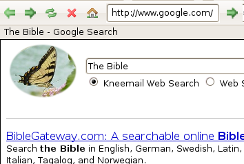

Since the integrated Web Browser is not
meant to be a replacement of your favorite browser, only the basics are
covered. It does have back, forward, reload, stop and home toolbar
buttons. You can also type in any Web address and pull up any Web Site.